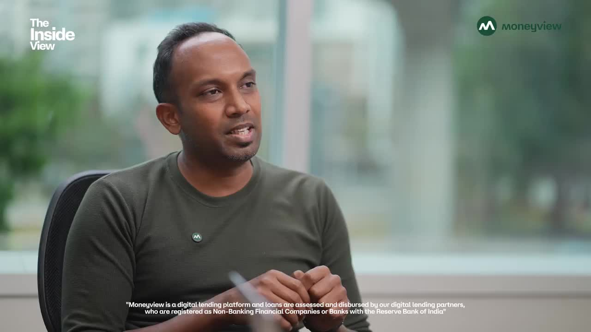
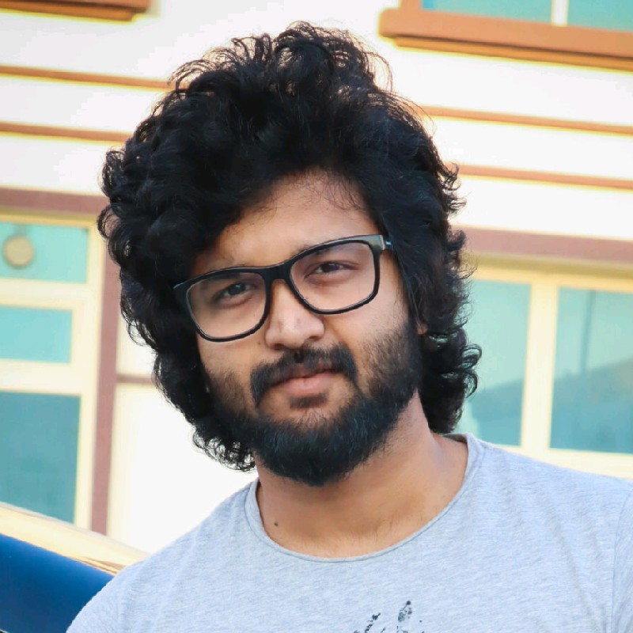

Guest lectures
Christ College · St. Joseph’s College
Visiting faculty proposal · HCI
Equipping M.Arch students with spatial UX, task-based HCI principles, and interaction frameworks for the physical-digital continuum.
Practitioner · design leader · educator
I turn complex technology into experiences people can understand, trust and use.
Not just a practitioner in a classroom
Beyond the studio
Christ College · St. Joseph’s College
Lollipop Events · Jio Startup Founders Module
Design thinking workshops using the Evidence-to-Experience methodology.
YouTube presence 02 conversations

MY TEACHING APPROACH
We research, build, and validate with hard data. This approach secures outstanding academic performance and transforms students into highly competitive industry professionals.
The Evidence-to-Experience framework
This is my assessment and teaching methodology: collect evidence, make an evidence-backed decision, measure whether it worked, then iterate.
Research real users. Five interviews or three contextual observations. What do they actually do?
Turn research into a clear problem statement. What is the core issue, and why is it unresolved?
Create a prototype: Figma, HTML or paper. Make the hypothesis tangible; polish comes later.
Put it in front of 5+ users. Watch what breaks. Measure success rate and time-on-task.
Let the data decide what changes. Build the next version, and test again.
Drawings are hypotheses tested against real buildings. HCI applies the same rigor; the evidence comes from users, not codes.
Core belief: Evidence always overrides opinion, even your own.
How I teach
70% Workshop
30% Input
Make, critique, remake. Theory enters when the task demands it, not before.
Short framing introduced exactly when students need it. Norman's affordances when they're building controls. Heuristics when they're critiquing each other.
"What did you observe; what did you measure; what changed because of it?"
Every module, connected to practice
I use my executive network to bring top-tier industry leaders into every module, giving students an insider’s view of real-world decisions and operational challenges.

Aneesh Raveendran Amal Sudheendran KumarEach leader is matched to the module, creating deep and relevant context instead of generic high-level talks.
Students examine active projects, market trade-offs, strategic pivots, and the decisions behind real outcomes.
Interactive fireside chats let students ask hard questions, build rapport, and learn how leaders actually think.
Live use cases. Honest teardowns. Perspectives from leaders operating at the top of their field.
Real briefs, not app exercises
Tertiary hospitals · emergency wards · medical campuses
Low-stress kiosks, accessible type, clearer patient journeys.National museums · art galleries · heritage buildings
Layered storytelling, inclusive discovery, dwell-time insights.Construction sites · building audits · site surveys
Fast defect logging, structural audits, drawing verification.Historic buildings · cultural architecture · museums
3D scans, decay data, and archives made accessible.Airport terminals · convention centers · shopping hubs
Multi-level routes, live search, and seamless QR handoff.Public libraries · university campuses · research institutes
Resource search, room booking, floor-by-floor wayfinding.Illustrative future student voices
Three transformations this course is designed to create.
“I came in treating UI like interior decoration. I left realizing an interface is a system as critical and complex as a building’s structural core. I can’t unsee design that way now.”
“Arun made us justify every pixel and button click with user data, the same way we defend a structural grid in a floor plan. It was tougher than a traditional studio jury, but it built real discipline.”
“I thought I had to choose between spatial architecture and digital product design. This course proved I can integrate both. It completely shifted my career confidence.”
The outcome
01Working frontend: Figma prototype at minimum; HTML/CSS/JS where appropriate.
02Research appendix: interview notes, test results, iteration log.
03Portfolio case study: problem → evidence → design → test → outcome.
If a stranger cannot interact with it, it is not finished.
The ask
I will align the course with the semester studio context (hospital, campus, housing or cultural space), so students use HCI to deepen the work they are already doing.